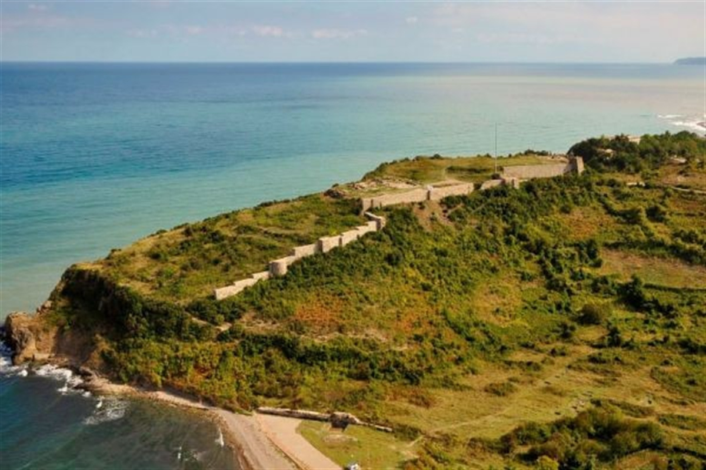

FİLYOS KALESİ
Kentin diğer yaygın adı Tieion’dur. Kimi kaynaklarda Tieion (Tion-Tiun) olarak geçen bu sözcük Aziz Stephanos’a göre kentin kurucusu rahip Tios’tan (Tios’un kenti anlamında) gelmektedir. Paflagonya ili Bitinya topraklarının kesiştiği alanda kurulmuştu.
İran kıralı kros’un Lidya Krallığına son vermesi ile Filyos Bölgesi İran’a daha sonra da büyük İskender zamanında Paflagonya ile birlikte Makedonya’ya bağlandı. M.Ö.301 tarihinde roma imparatorluğu ikiye bölününce Selçuklular ve Cenevizlilerin hakimiyetine geçen Filyos 1459 –1460 tarihlerinde Fatih Sultan Mehmet tarafından Osmanlı İmparatorluğuna bağlandı.
Tarihi eserlerin birçoğu Roma, Bizans ve Cenevizlilere aittir. Beldemizde büyük bir mağara,denize uzanan kale, açık hava tiyatrosu, antik liman, su sarnıcı, açık ve kapalı kilise vb. tarihi eserler mevcuttur.